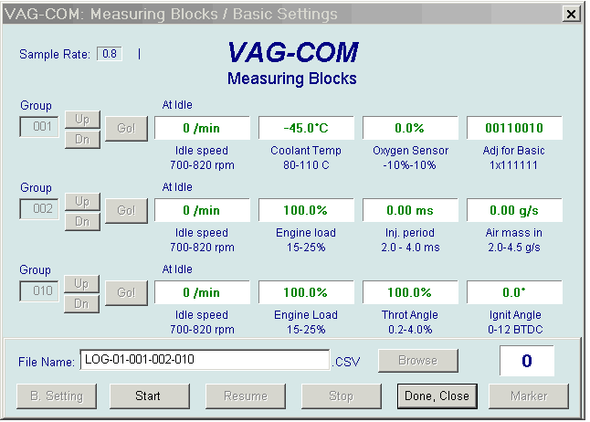

|

VAG-COM
Data Logging

You can log the data in
the measuring blocks to a
.CSV file. These files can be opened and analyzed
with Excel or other applications including
this free
spreadsheet.
At this time, I
do not intend to write a stand-alone data-analysis
tool. You should be able to do all the analysis and graphing you
want with Excel which has extensive macro-programming
capabilities, but I have not explored these in detail.
Since the output files are straight comma-delimited ASCII,
it should also be possible to write an analysis tool in the
programming language of your choice. If anyone comes
up with anything cool, whether Excel macros or a stand-alone
program and wants to "contribute" it, I would be more
than happy to post it on the VAG-COM download page.
If it's really cool, I might be interested in buying it.
There is currently no support for logging Groups that have
10 display fields (most commonly Group 000). This will be
added at a later date if there is a need/demand.
At the
moment, no data will be logged for *any* group if you have
a group with 10 display fields showing on the screen.
While you have the Log Dialog open, you can
Start, Stop,
and Resume logging. If you exit the dialog and then re-enter
and re-Start a log, and the file has the same file name as a
previous log, the previous log will be overwritten.
The Marker function
has given me fits. The intention was that
pressing any key on the keyboard would insert a marker in the
log-file. It works, but only after you've clicked the Marker button
once! (I am baffled by this at the moment).
The Browse button
is not currently implemented. All
Log Files will be placed in the a LOGS sub-folder.
Switch to Basic Settings is not currently available while logging
(but may be added later). However, you can start a log while
you're in Basic Settings. If VAG-COM keeps
insisting
that it can't open a Log file, you're probably missing the
LOGS folder.
Warning!
If you're going to use VAG-COM while you're driving,
please use a second person! Let one drive while the other
plays with the PC!
Shareware Limitation(s)
Same as Measuring
Blocks
.
|